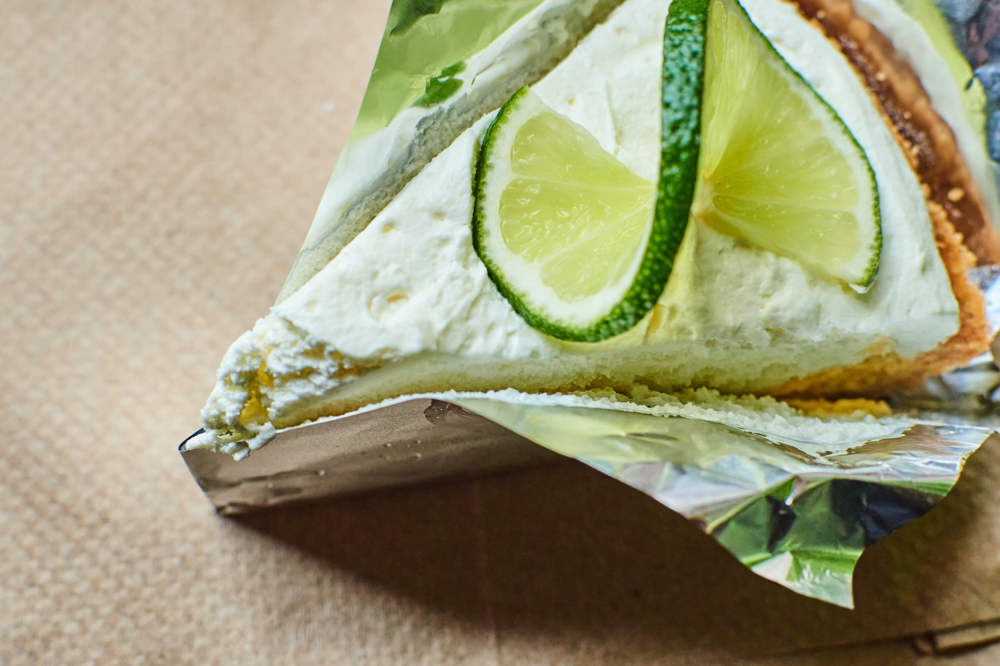

Lime pie

List of ingredients
You will need:
- 6 fresh lime
- 1 can of condensed milk
- 4 dl of cream
- 200g of simples cookies
- 80g of melted butter
- 2 gelatine sheets
Preparation:
- Break the cookies in tiny pieces to a bowl with a crusher
- Add the melted butter into the cookies and mix well. Add the mix to the bottom of the tart pan
- In another bowl mix the cream with the condensed milk some lime juice until the mix has consistence
- Get the gelatine sheets into warm water and let them rest.
- Pu the mix of the step 3 into the tart pan and take it to the fridge for 2h. Serve cold.
Return to homepage